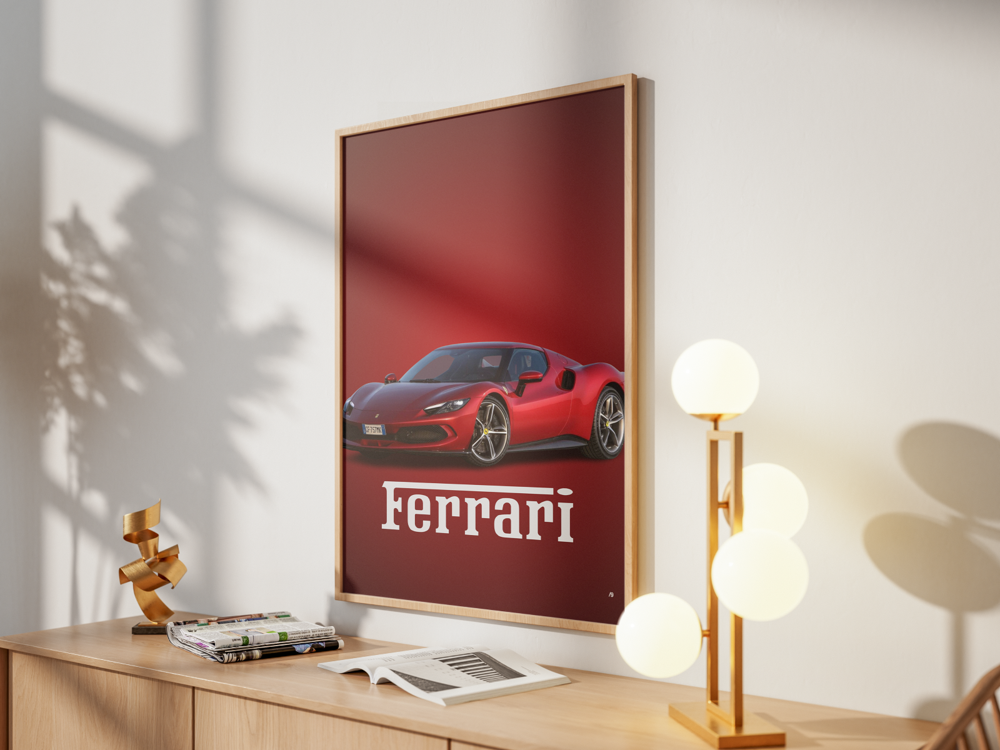

Ferrari
Poster
 Ferrari.png)
Eleganza in Rosso
Questo progetto celebra il mito Ferrari, unendo la potenza tecnologica della vettura a un design grafico essenziale e d'impatto. Al centro della composizione, la Ferrari 296 GTB emerge con i suoi riflessi scarlatti su uno sfondo rosso profondo, creando un effetto di continuità cromatica che esalta le linee aerodinamiche della macchina.
Composizione Tipografica
La scelta della tipografia "Ferrari" in bianco puro funge da ancora visiva. Il font graziato e solido, posizionato nella parte inferiore, bilancia il peso visivo della vettura, conferendo al poster un tono istituzionale e prestigioso.
Luce e Colore
L'illuminazione studiata sulla carrozzeria crea profondità, mentre l'ombra portata sul piano d'appoggio stacca il soggetto dallo sfondo, dando un senso di tridimensionalità e realismo immediato.
